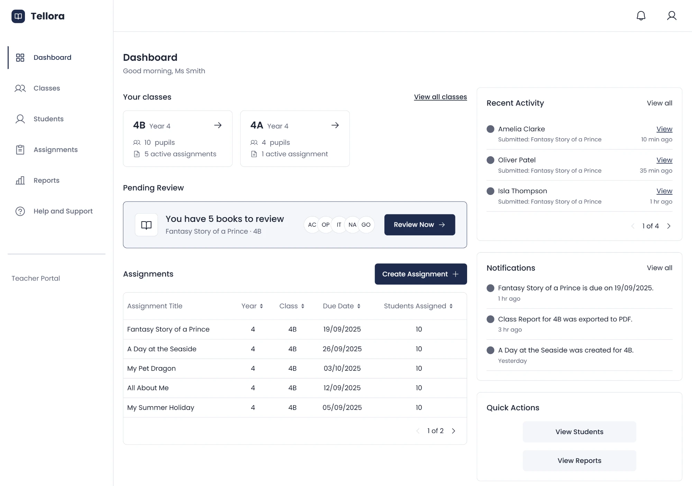
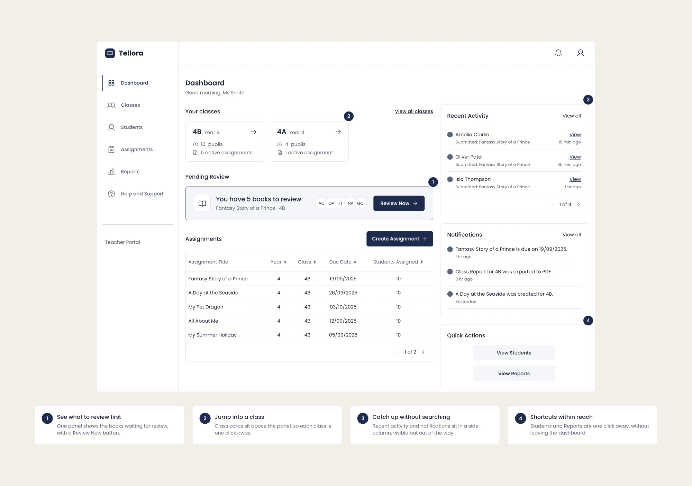
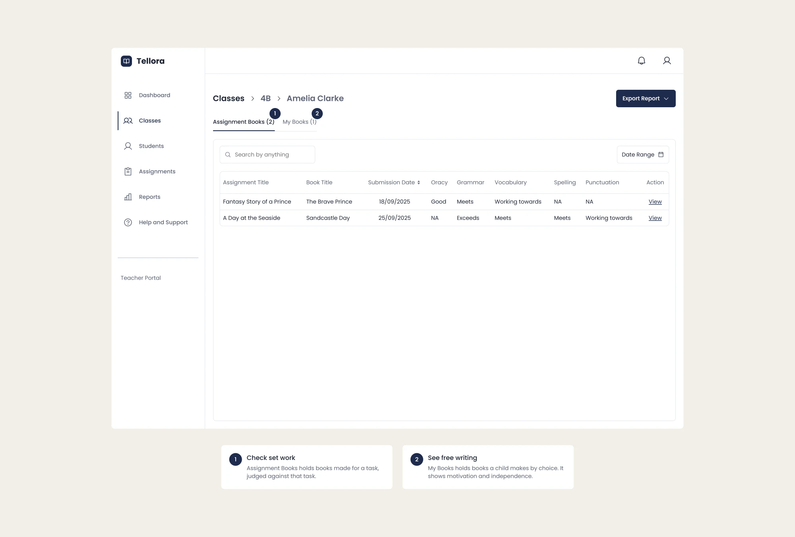
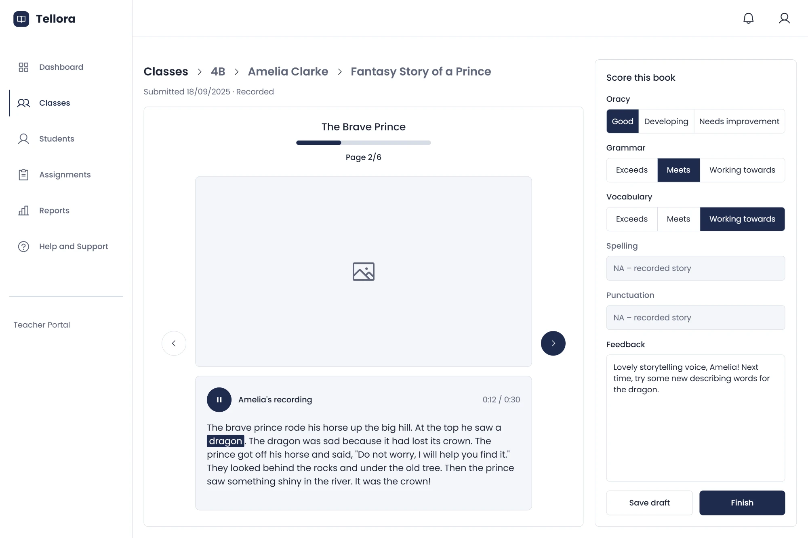
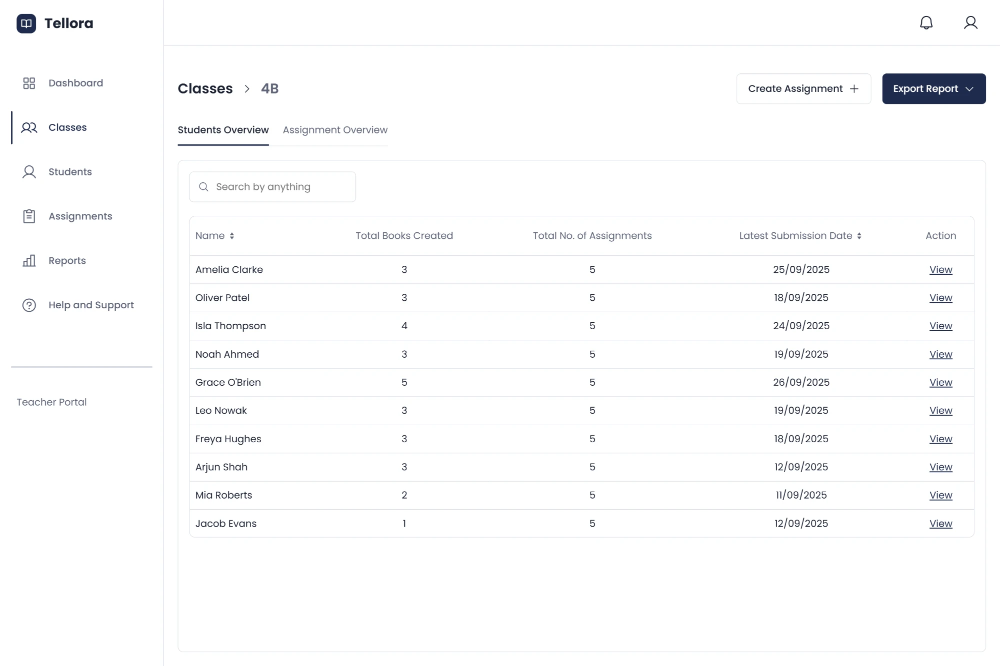
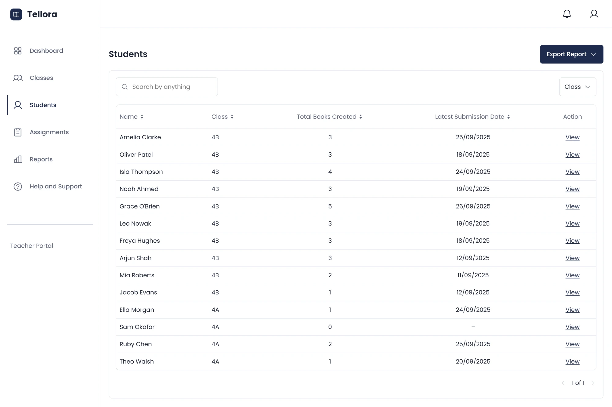
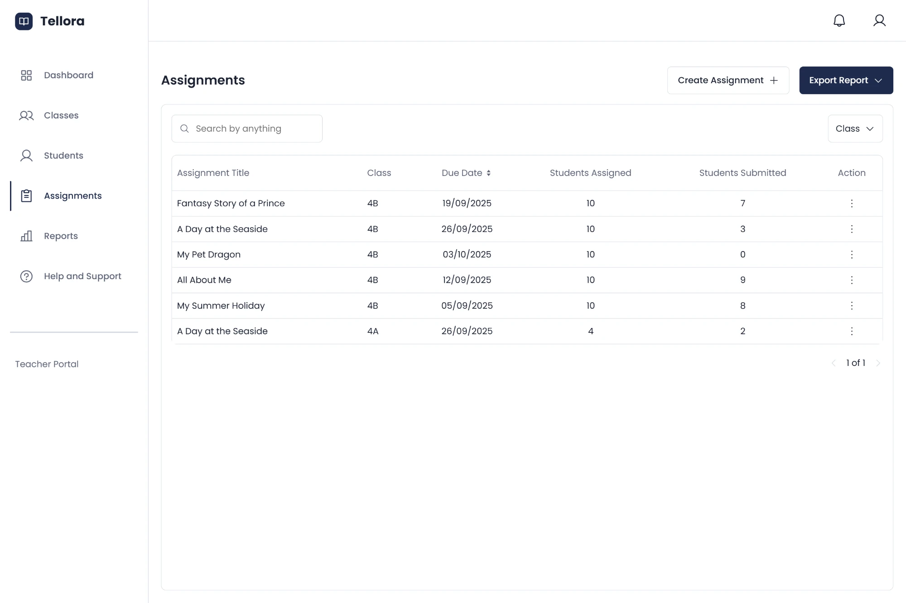
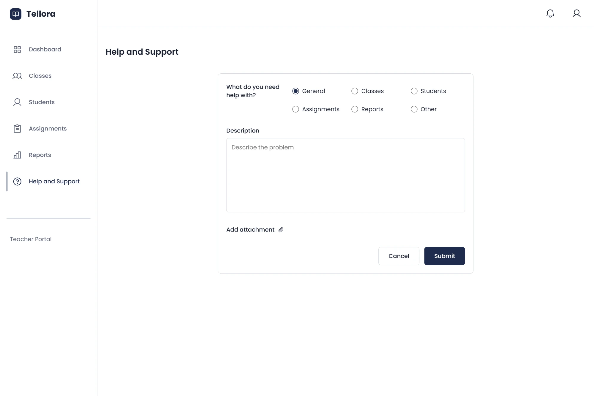

Case study · EdTech · B2B web app
Tellora Teacher Portal: Turning children's storybooks into progress teachers can see
I designed the Teacher Portal for Tellora, a storytelling app for UK primary schools. Teachers use it to set story tasks, read and score each child's book, and share progress. Names changed for confidentiality.

At a glance
The problem
Children were finishing storybooks, but teachers had no way to see them, mark them or follow each child's progress.
What I did
I set the requirements with the founders and designed 20+ screens. After teachers tested them, I reorganised the structure in a week.
The outcome
A portal that scores every book with curriculum levels, not grades, and gives teachers reports to share. It was handed over for visual design.
The problem
Books with nowhere to go
Tellora is sold to schools, not parents, because storytelling builds children's English. Children aged 5–12 use it to make illustrated storybooks. Younger children mostly tell their story out loud and the app records it. Older children can type it.
- The teacher gives the class a story task in the Teacher Portal
- Each child makes a storybook in the Student app
- The teacher reads it, scores it and tracks progress in the Teacher Portal
But the founders had only built the student app, so every finished book stayed inside it. These two everyday use cases show the gap.
Use case 1
Checking who has handed in a task
Before
If a teacher set a story for Friday, there was no list of who had handed in a book and who hadn't.
After
- Opens Assignments
- Sees who has submitted
- Opens a child's book
- Scores five skills and writes feedback
Result
The teacher sees at once who hasn't finished. Every submitted book is ready to read and score.
Use case 2
Telling a parent how their child is doing
Before
No reports, no record, nothing to export.
After
- Opens Students
- Picks the child
- Sees their books scored by skill
- Exports a PDF or CSV
Result
A report for a parents' evening or the head teacher, based on the child's own books.
What a missing teacher side cost
No evidence of learning
Every book shows how a child speaks and writes. But teachers had no way to read it, mark it or track progress over a term.
No product for schools
Schools pay for progress they can see. Without a teacher portal, Tellora couldn't be sold as a classroom tool.
How might we help a busy primary teacher give story tasks, read every child's book and see how their English is growing, without turning her into a data analyst?
Who I designed for
The class teacher uses the portal every day.
Primary user · The teacher who reviews the books
-
Class teacher
Sets story tasks, reviews books and tracks each child
Persona: Ms Smith- Relied on
- Needs
- A clear list of books waiting for review
- A simple marking panel
- Easy reports
- Pain points
- Too many books to review at once
- Slow tools
- Reports take effort
“I want to spend my time encouraging kids, not clicking through menus.”
How my picture of the teacher changed
Version 1: Saving time
Give tasks quickly, review without wasting time and track each child.
Version 2: Teaching literacy
Also improve children's speaking, vocabulary, grammar, punctuation and spelling, and teach them how to tell a story.
Constraints
From a blank page
No teacher portal existed, so there was nothing to audit
3 weeks
2 weeks to design and 1 week to make changes, alongside the student app
Mid fidelity only
Visual design and development came later, after I left
So I agreed the requirements with the founders first. Then I tested a clickable prototype with teachers and used one layout for every list page.
Research findings
I worked with the two founders to decide what to build. One of them is also a teacher.
Requirements workshop
A planned session on users, key features, competitors and what success looks like after six months
Feature list
The founders' requests, sorted into a clear list of what teachers need
Persona and UX strategy
A teacher persona, updated after testing, and principles every screen had to follow
What I found
Reviewing is the main job
A teacher's main task in Tellora is reading and marking children's books. Class lists and reports are there to support it.
A book count isn't progress
The founders wanted teachers to see each child's English improve, skill by skill, not just count finished books.
Teachers have minutes, not hours
Anything that needs setting up, like filters or custom views, takes time away from children.
Teachers don't create accounts
The school admin creates accounts for teachers and pupils, so the portal starts at the login screen.
Project scope
The first release had one goal. Every finished book had to reach a teacher.
First release
Added during the project
Saved for later
Key design decisions
01 Start the dashboard with the work to do
The situation: Teachers open the portal between lessons, wanting to know what to do first. The founders wanted a simple dashboard that showed everything.
What I designed: The dashboard is built around one panel showing the books waiting for review, with a Review Now button. Class cards sit above it. Recent activity, notifications and shortcuts sit in a side column, visible but out of the way. After testing, it needed fewer changes than any other screen.

02 Separate set work from free writing
The gap: Children make two kinds of book. Some answer a teacher's task, and others they make by choice, for example at home. When both are mixed together, a teacher can't tell which ones to judge against the task.
What I proposed: Each child's books are split into two tabs, one for set work and one for free writing. Set work is judged against the task. Free writing shows a child's motivation and independence. Keeping them apart lets the teacher read each one for what it is.

03 Score in the curriculum's language, not grades
Where I pushed back: The feature list asked for a grade on every book, such as a score, stars or a rubric. But the founders' own notes said the scoring method still needed research. So before designing anything, I asked the founder how teachers actually mark English.
What I designed: Teachers already mark English against five UK curriculum skills, each with its own levels. I used the same skills and levels to score both kinds of book. There's nothing new to learn, and reports use the same language as the school.
| Skill | How it's scored |
|---|---|
| Oracy (speaking) | Good, Developing or Needs improvement. Shows “NA” when the child typed the story instead of recording it, as there's no speech to assess |
| Grammar, Vocabulary, Spelling, Punctuation | Exceeds, Meets or Working towards Expectation. Spelling and punctuation show “NA” when the child recorded the story, as there's no writing to assess |
Every list of books shows a score for each skill, and class overviews show each skill as an average. A summary in the assignment report counts how many pupils are at each level. It shows which skill the class needs help with, such as punctuation. Only teachers see the scores. Children never see grades.
![The Summary tab of the assignment report for 4B, Fantasy Story of a Prince. One table counts pupils at each oracy level and one at each writing level. The Punctuation row is highlighted, with the note “Most pupils are working towards in punctuation.” Four numbered notes. 1. Score speaking: Recorded stories use Good, Developing or Needs improvement, and NA for typed ones. 2. Score writing: Grammar, Vocabulary, Spelling and Punctuation use Exceeds, Meets or Working towards. 3. Spot where the class needs help: Counts at each level show the class needs help with punctuation. 4. Only teachers see the scores: Scores stay in the Teacher Portal. Children never see grades.](images/tellora-teacher-report-summary-annotated.webp)
04 One report or three
The disagreement: I first designed one report page with filters, so teachers could build any view they needed. The founder disagreed. Teachers mainly review work and aren't technical. They want reports that are already sorted by type and kept over time, not rebuilt with filters each time.
How it was resolved: Once I understood the reasoning, I agreed. Reports became three tabs, for classes, students and assignments. Each tab opens a list and a detail page, and every report can be exported as a PDF or CSV.
![Tellora's Reports page with its Class Report, Student Report and Assignment Report tabs. In front is the class report for 4B, listing each book with its scores. Four numbered notes. 1. Pick the report you need: Three tabs, for classes, students and assignments, instead of one page of filters. 2. Share it as a file: Every report can be exported as a PDF or CSV. 3. List, then detail: Each tab opens a list and a detail page. The breadcrumb leads back. 4. Nothing to rebuild: Reports are already sorted and kept over time, not rebuilt with filters each time.](images/tellora-teacher-reports-annotated.webp)
05 A way to ask for help
The gap: Nothing in the feature list told teachers where to go when something went wrong, such as a missing pupil, a wrong score or a failed export.
What I added: A Help and Support page in the main menu. Teachers fill in a short form, confirm it and see a message that it was sent. Requests go to the super admin. I proposed it, and the founders agreed.
![Tellora's Help and Support flow in three steps: the form, a pop-up asking the teacher to confirm, and the form again with the message “Help request submitted.” Four numbered notes. 1. Find help in the menu: Help and Support sits in the main menu with the other sections. 2. Describe the problem: A short form to pick a topic, describe what went wrong and add an attachment. 3. Confirm before sending: Teachers confirm before the request is sent. 4. Know it was sent: A message confirms the request went to the super admin.](images/tellora-teacher-help-annotated.webp)
Testing and iteration
I tested the design with teachers before handing it over.
Clickable prototype
The portal in Figma, with screens linked so teachers could click through
Teacher workshop
An online session with a founder and two teachers, who found the structure confusing
One week of changes
Sections reorganised, one report split into three, and the persona updated
What went wrong
The structure
In my first version, every section linked to every other section to save clicks. But the same information appeared in several places, and teachers couldn't tell which page to use. I gave each section one clear job. Because I caught this in a prototype, fixing it took a week, not a rebuild.
The persona
My first persona focused on saving time and missed what teachers are trying to teach. After research and the workshop, I added literacy goals. That's why every book is scored skill by skill.
What both taught me: Ask what people are trying to achieve, and test how the pages work together, not just one at a time.
Final design
The portal has six sections in one menu. Every list page uses the same layout, with search, filters, a table and an export button. A teacher who learns one page has learned them all.
![Diagram of the final structure: Dashboard at the top, with Classes, Students, Assignments and Reports below it. Classes leads to a class page, Class 4B, with Students Overview and Assignment Overview tabs. Students leads to a pupil's page with Assignment Books and My Books tabs. Assignments leads to an assignment's detail page showing who submitted. All three paths end at Book review, where a child's book is read, listened to and scored. Reports leads to a class, student or assignment report, then a detail page, then Export PDF or CSV.](images/tellora-teacher-structure-diagram.webp)





Handoff
The project had three stages. I owned the first, mid-fidelity UX. Visual design with a UI designer and then development came next. The UI designer would start after I left, so my files had to explain themselves.
Clickable prototype
20+ screens, plus menus, pop-ups and confirmations, linked in Figma
Annotated screens
Notes on every screen explaining what each part does and why
Accessibility: My UX strategy asked the next stage to meet WCAG 2.1 AA, support keyboard navigation and keep text in tables easy to scan. Work for developers, such as a component library and an accessibility audit, was planned after visual design, outside my contract.
Outcome
Designed from a blank page in about two weeks, reorganised in one week after teachers tested it, and handed over for visual design.
What the portal gives teachers
One place to start
The dashboard shows the books waiting to be read and opens them in one click.
Every child's work, sorted
Set work and free writing sit in separate tabs, each scored skill by skill.
Progress in their own language
Scores use curriculum levels, not grades, and a summary shows which skill a class needs help with.
Reports ready to share
Class, student and assignment reports are kept over time and can be exported as a PDF or CSV.
Feedback
In the workshop, the teachers found the dashboard easy, and reactions were mostly positive. Their confusion about repeated pages led to the reorganisation. (Paraphrased from the workshop, not a written quote.)
My contract ended at handoff, so there's no usage data. I gave the team success measures to track. Teachers should review a book in one or two clicks and create a report in fewer than three steps. They should set work for the wrong class less often and find the portal quick and clear.
What happened next
The portal was handed over at mid fidelity for visual design with a UI designer. I'm no longer in touch with the team, so I can't say what has been built since.
What I learned
Design for the job, not the data
A portal full of tables still has to start with the teacher's main task, reading children's work.
Flexible isn't always simple
One report with filters suited the way I think. Three ready-made reports suited teachers.
Simple rules work for everyone
The rules I used for five-year-olds also worked for busy teachers. Each page has one job, every page shares one layout, and nothing is deleted without a confirmation.
Next, I'd watch a real week of marking
Then I'd design screens for empty and error cases, such as a new teacher with no classes or a failed export.
I used ChatGPT along the way to check my thinking and refine interface copy.